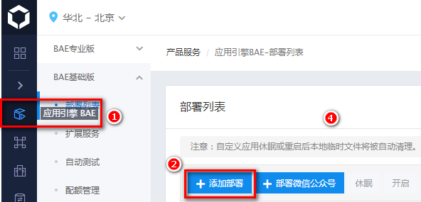
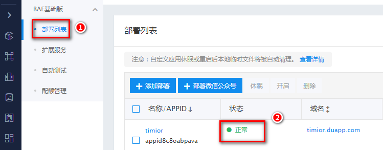
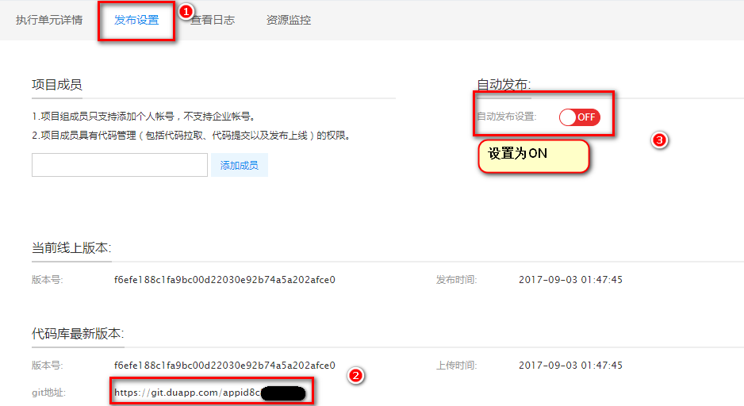
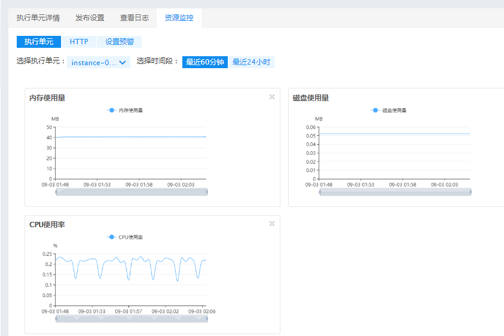

历经一波三折，最后选择将博客托管在了百度云的“应用引擎BAE”上，基本符合博客的需要的所有参考因素。
其一：服务器在国内，访问速度快。
其二：百度自家产品，博客内容更易被百度爬虫抓取。
其三:可以进行个人域名备案，这对需要使用CDN等额外服务的需求来说极为重要。
其四：这也是最重要的一点，那就是便宜，1毛钱1天，一个月才三块，且1毛钱的配置资源性能却完全满足需求，比起购买云主机，这欢喜不用多说。
再回头聊聊这一波三折，我依次将博客托管在:github,conding,码云oschina
github:这是最初的选择，原因是搭建的教程很多，容易学习，然而不久或发现，github早在2015年在遭受被劫持的百度广告JS脚本攻击后，就开始屏蔽百度的爬虫了，直接导致了github博客的内容无法被百度收录，外加服务器在国外，访问速度慢，最后无奈舍弃，选择conding。（另外有人测试使用CDN，然而百度收录的效果依旧不理想）
conding:最初使用感受还不错，可惜好景不长，突然竟然要收费的，而且价格不低，一年199RMB，如果不开通Vip，就在强制在首页投广告（等待5秒才跳转到博客页面），严重影响使用体验。
oschina:在对conding失去信心之后，一直想寻找一个新的平台，之后发现的阿里的oschina，可搭建好不久就发现了oschina是不支持自定义域名的，每次访问要输入一串oschina这么丑的名字，确实揪心。
百度云“应用引擎BAE”-博客托管
Hexo的配置就不多说了，网上一堆教程，方法步骤都是相同的，这里仅仅介绍百度云“应用引擎BAE”的配置
1. 登陆百度云https://cloud.baidu.com/ ,点击应用引擎BAE，并添加部署

2. 选择：
模板类型选择：所有模板
模板场景：所有
域名:随意输入
类型：lighttpd-static (必须选择这个)
代码版本：git(必须选择这个)
单元套餐：均选择最低(内存:64M，磁盘:2GB，宽带:5Mb/s),这个带宽确实很良心，买虚拟云主机最低配的带宽才1Mb/s，
最后勾选：同意 百度应用引擎服务协议、BAE域名绑定服务协议，下一步，之后支付
3. 等待系统部署结束
支付完成后再次回到应用引擎BAE–>BAT基础版本–>部署列表，等待系统部署介绍，待状态显示正常(等待大约10秒左右)

4. 修改发布设置
在操作栏下，下拉箭头，查看发布设置，找到代码仓库的git地址，修改hexo配置文件里设置的git提交的仓库即可，需要注意的一点是，系统默认是不自动更新页面git提交的内容的，需要将自动发布设置设为开即可

5. hexo deploy错误
这个错误是百度云-BAE的git配置存在问题，只需在hexo deploy执行前修改下参数即可
hexo提交报错信息如下，意思http curl的的长度不够，
Everything up-to-date
FATAL Something’s wrong. Maybe you can find the solution here: http://hexo.io/docs/troubleshooting.html
Error: fatal: The remote end hung up unexpectedly
fatal: The remote end hung up unexpectedly
error: RPC failed; HTTP 411 curl 22 The requested URL returned error: 411 Length Required
Everything up-to-date
修改git 配置，增加git传输的字节限制
|
|
6. 资源占用

7. BAE使用限制
1、如果自定义域名，要求域名需要备案，不过直接使用BAE就可以为域名进行备案
2、BAE只支持，单一master分支，不能够创建git分支，如果提交分支会被拒绝，无法对md源文件使用分支进行保存，因此依旧将source源文件托管在github上、
报错提示如下
|
|
总结
静态博客快速搭建只需要三点：
其一：静态网页生成工具，如Hexo、Jekyll、Octopress
其二：静态网页托管环境，如lighttpd，nginx，apache，httpd
其三：博客管理工具,通常使用git进行管理